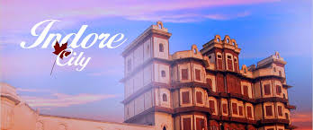

Indore is a city in the state of Madhya Pradesh in India. It is the largest city in Madhya Pradesh.[1] It is 190 km away from Bhopal, which is the capital city of Madhya Pradesh. The lifestyle of people of Indore is similar to Mumbai and also Indore is a rich city like Mumbai. So, Indore is also called "Mini Mumbai" (small Mumbai).[2]
Indore  image of indore